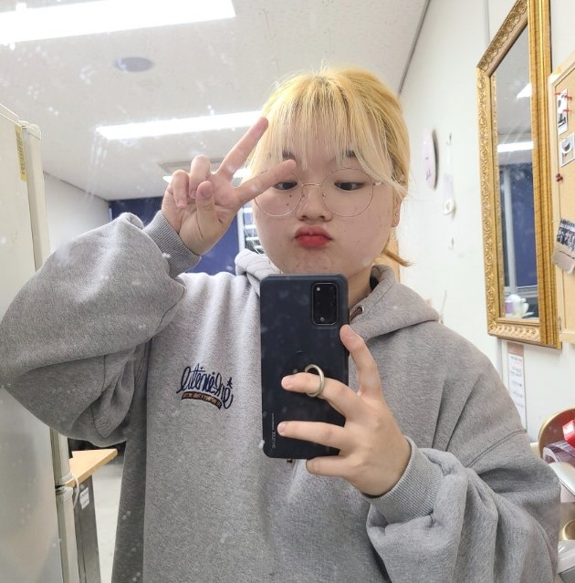
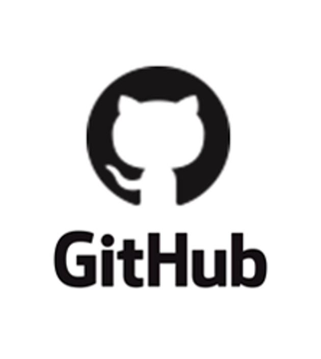

My Project
Under the sea
GAME
Detect car on Backward
MACHINE LEARNING
Pet health care
APPLICATION
My Life
-

나의 대학생할
제가 컴퓨터 공학 전공에 진학 하게 된 이유는 솔직히 없습니다.
좀 더 배우고 싶었던 전공은 따로 있었고 관심조차 없어서 고려조차 하지 않았습니다.
부모님의 극심한 반대로 원래 진학하고 싶었던 건축학전공을 포기하고
공대에 있는 과 중 그나마 재밌어보이는 컴퓨터공학 전공을 골라서 오게 되었습니다.
대학교 1학년 때는 전공과목이 거의 없었고 교양 수업들 밖에 없어서
전공에 대한 큰 고민 없이 무탈하게 재학했습니다.
대학교 2학년이 되면서 전공 과목이 많아지자 다양한 분야와 프로젝트들에 흥미가 생겼고
분과 동아리에 들어가게 되면서 게임을 만들어 학과 전시회에 참가하는 등 전공 관련 활동을 했습니다.
대학교 3학년인 지금, 캡스톤 수업과 SW온라인 경진대회 캡스톤 그리고 오픈소스 개발방법론 수업을 통해
다양한 주제의 프로젝트들을 동시에 진행하고 있습니다.
/p>
-

A
A
A
-

A
A
A
-

A
A
A
-
A
A
A